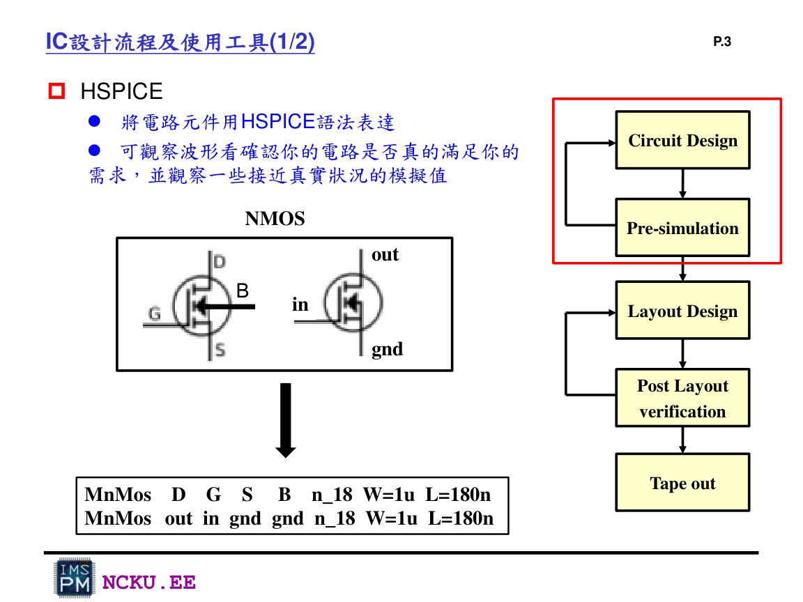
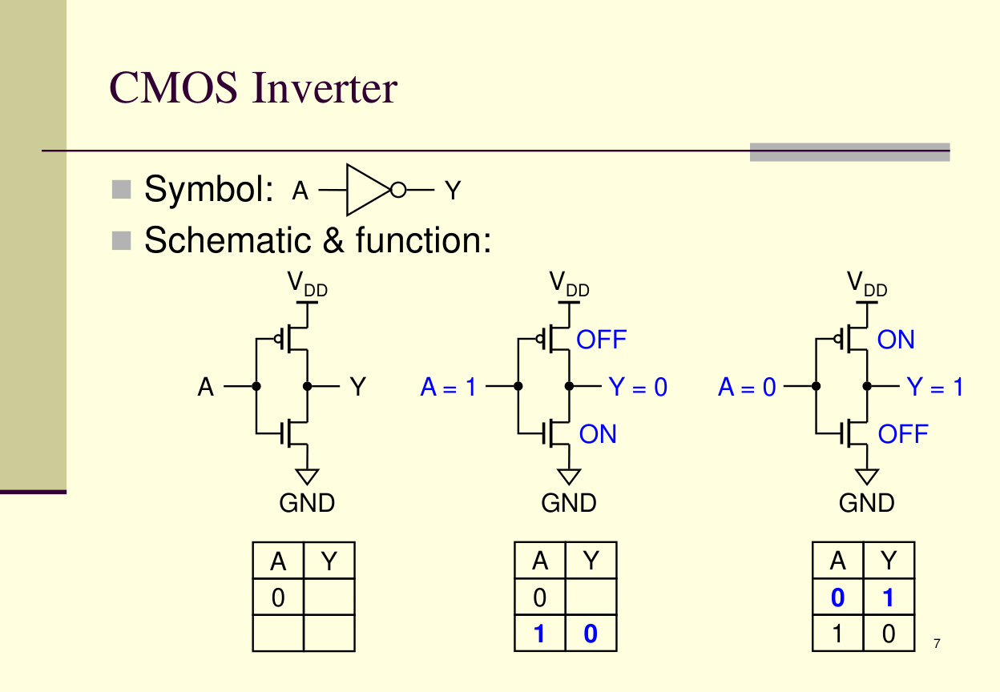

作業目的與 IC 設計位置
Lab8 的位置是 Circuit Design 與 Pre-simulation：還沒有畫 layout 之前，先用 HSPICE 檢查 transistor-level 電路功能。
作業目的
Lab8 要訓練你把 CMOS 邏輯閘從「邏輯符號」轉成「MOS 電晶體電路描述」，再透過 HSPICE 觀察輸入與輸出波形是否符合真值表。
重點不是只背 NAND/NOR，而是理解 PMOS pull-up network 與 NMOS pull-down network 怎麼形成邏輯輸出。

Lab8 講義中的 IC design flow：Lab8 聚焦 HSPICE 與 pre-simulation。
需要完成的輸出成果
| 項目 | 要做什麼 | 要截圖什麼 |
|---|---|---|
| Inverter | PMOS + NMOS | terminal job concluded、WaveView 中 in/out_1 |
| NAND | PMOS 並聯、NMOS 串聯 | terminal job concluded、WaveView 中 A/B/out_2 |
| NOR | PMOS 串聯、NMOS 並聯 | terminal job concluded、WaveView 中 C/D/out_3 |
CMOS 基本觀念

CMOS inverter：A=0 時 Y=1；A=1 時 Y=0。
為什麼 PMOS 要接 VDD，NMOS 要接 GND？
PMOS 在 gate 低電位時導通，適合把輸出拉高；NMOS 在 gate 高電位時導通，適合把輸出拉低。兩者互補形成 CMOS 邏輯閘。